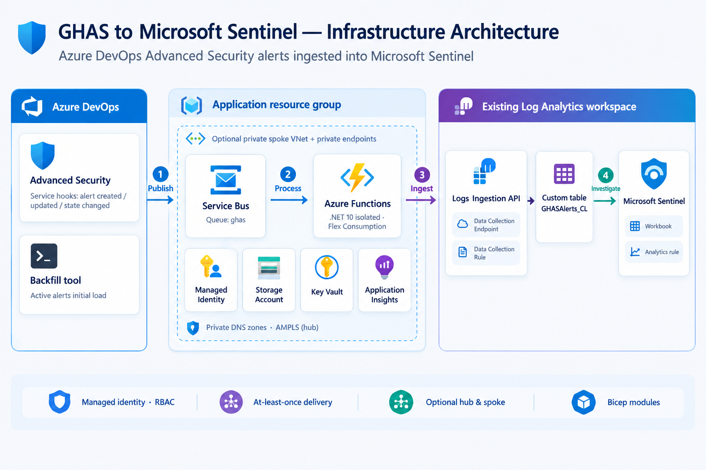

Stream changes
Created, state-changed, and updated alert events enter a Service Bus queue.
01 / 06 · Documentation
This integration forwards events from GitHub Advanced Security for Azure DevOps to Microsoft Sentinel. It does not configure Advanced Security in Azure DevOps or activate a GitHub repository's security features.
Created, state-changed, and updated alert events enter a Service Bus queue.
A separate backfill utility pages through currently active alerts in one Azure DevOps project.
Use a custom table and workbook, with an optional scheduled rule for active secret alerts.
EventId when querying.A queue separates event delivery from normalization and ingestion. The application resources and existing workspace can be in different resource groups or subscriptions.

ghas queue using a queue-scoped Send SAS credential or a service connection.GHASAlerts_CL.Failed parsing or ingestion causes the Function invocation to fail so Service Bus can retry and eventually dead-letter the message. The workbook's operational panels are opt-in.
See the diagrams in the architecture and processing flow slides, or download the editable diagram.